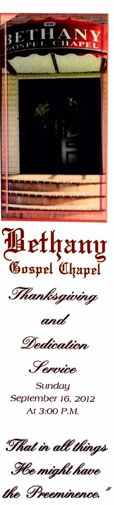
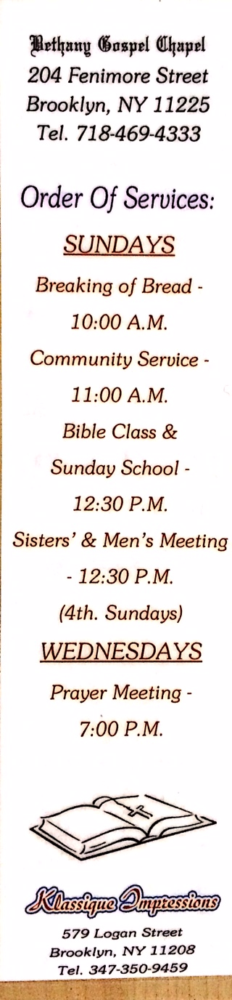

BETHANY GOSPEL CHAPEL
"That in all things, He might have the preeminence" Colossians 1:18


Welcome
Bethany Gospel Chapel, is a brethren assembly located in Flatbush, Brooklyn, teaching and ministering the Word of God. All are welcome to worship with us.
STATEMENT OF FAITH
We believe...
- The Scriptures, both Old and New Testament, to be the inspired Word of
God, without error in the original writings: to be the complete revelation of His will for the salvation of men, and the Divine and final authority for all Christian faith and life, (2 Timothy 3:16, Matthew 5:18, 2 Peter 1:21).
- In one God, Creator of all things, infinitely perfect and eternally
existing in three persons, Father, Son and Holy Spirit, (Matthew 28:18-19; 2 Corinthians 13:14, 1 Thessalonians 1:3-5; 1 Peter 1:2).
- That Jesus Christ is true God and true man, having been conceived of the
Holy Ghost and born of the virgin Mary. He died for sin once, rose bodily from the dead and ascended into heaven. He is now seated a the right of the Majesty on High as our high Priest and Advocate, (Hebrews 8:1; 9:11-14).
- That the ministry of the Holy Spirit is to glorify the Lord Jesus
Christ, and during this age to convict men, regenerate the believing sinner; indwell, guide, instruct and empower the believer for godly living and service, (Romans 8:11; John 16:7-9; Galatians 5:22-23).
- That man was created in the image of God but fell into sin and is
therefore lost and only through regeneration by the Holy Spirit can salvation and spiritual lie be obtained (Romans 5:12; Titus 3:5-6).
- That the shed blood of Jesus Christ and His resurrection provided the
only ground for justification and eternal salvation for all who believe; and only such as receive Jesus Christ are born of the Holy Spirit, and thus become children of God, (Romans 5:8; 1 Peter 3:18; 2 Corinthians 5:21; Ephesians 1:13, 14).
- That a person who genuinely exercises faith in the Lord Jesus Christ is
eternally saved. There is absolutely no possibility of such a one losing his salvation. God, however, chastens and corrects His disobedient children in His infinite love, (John 5:24; 10:28; Romans 8:20-30; 1 Corinthians 11:23-24; Hebrews 12:5-11).
Background
Bethany Gospel Chapel has been around for a very long time. The building was renovated during 2010 - 2011. The newly renovated Bethany Gospel Chapel was rededicated on Sunday, September 16, 2012.


Leaders
Elders
George Simon
Lenny Wright
Board of Trustees
Ryan Linton
Carlton Rhooms
Alvin Henry
Services
Sunday
10:00 a.m. Worship Service
11:00 a.m. Community Service
12:30 p.m. Sunday School/Bible Study
12:30 p.m. Sisters' and Men's Meeting (4th Sunday of each month)
Tuesday/Thursday
- 11:00 a.m. Sisters' Prayer Meeting and Visitation
Wednesday
Friday
Methods of Contact
For further information you can contact the sanctuary at the following mailing address:
Bethany Chapel
204 Fenimore Street
Brooklyn, NY 11225
You can call the sanctuary on the Chapel Phone: 718-469-4333
You can also contact the Chapel via Email: bethanychapel1204@gmail.com